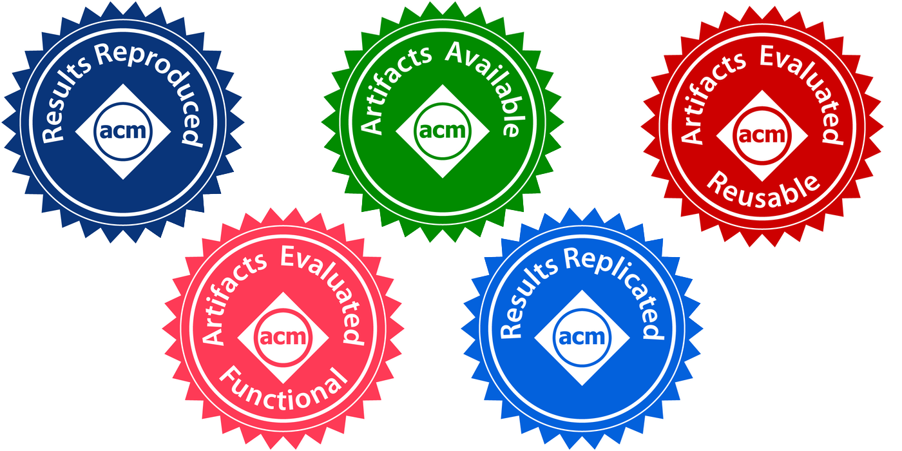

This year I took part in the Artifact Evaluation Committee (AEC) of three of the most important programming languages conferences: POPL, PLDI and OOPSLA. Below I describe some of the problems I commonly encounter together with some tips on how to avoid them. I also mention some of the things you (as an author) can do to make the life of the reviewers easier and thus increase your chances of acceptance. Notice that this is based on my experience with the particular class of artifact which I normally review: comparing a tool agains others on a given set of benchmarks.
Most Artifact Evaluations have a first phase (normally called kick-the-tires) where reviewers perform a simple test stressing the key elements of the artifact. The instructions for such phase shall be clearly marked in the documentation of the artifact and shall be as easy as possible. Reviewers should be able to run this phase in 30 minutes and, if passed, they should have no technical difficulties with the rest of your artifact. In this first phase, most reviewers will not read the instructions for the complete evaluation. It is thus a good idea to give an overall estimation of how long the complete experiments will take. If they take long, this will alert reviewers to start as soon as possible (even before the complete evaluation phase officially starts).
Claims and experiments
It is a good idea to state in the documentation which claims of the paper the artifact support. Many authors tend not to mention the claims that are not supported by the artifact. I personally prefer to have both clearly stated in the documentation.
If the complete experiments take long (I have evaluated artifacts where it took 5 days to complete a run), it is a good idea to provide a short version of the experiments using a representative subset of benchmarks that can still validate the claims of the paper. With this I don't mean you should not provide your complete experiments (one of the goals of an artifact is to have an archive where complete results can be fully reproduced), but keep in mind that the review process can be on a tight schedule.
Packaging
I have mostly seen 4 ways of packaging an artifact:
- Instructions to install all the tools: this is a nightmare for reviewers and completely dangerous for you. The installation of most research prototypes I have seen do not work out-of-the-box or might not run on every platform.
- AWS machine: this might violate reviewers anonymity.
- Virtual machine: I used to be a big fan of this packaging, but this normally result in a file of several GBs which might be quite slow.
- Docker image: normally light and fast.
Both 3. and 4. allow you to package your artifact in a way that all dependencies are fulfilled and it reduces the chances of the reviewer encountering technical issues. Even if you go for such options, you should always provide information on how to install everything that is needed (pointers to each tool documentation should be enough).
Keep the artifact as small as possible. Before submission, remove all unnecessary data (e.g. logs or other generated data). However, if experiments take long, it could be a good idea to provide the logs that were generated while writing the paper. You can place those in a different folder to avoid confusion when the reviewer is running the artifact.
Presenting your results
The format of the results generated by the artifact shall be as close to the one in the paper. In the best scenario, save your results in a file (e.g. csv) and provide a script that automatically creates the tables and/or figures (in tex, html or any other format that will make the visualisation easy). If the papers presents summarised results (one benchmark is executed several times and the paper just report the average result), make your script to compute those from the raw data. If you will present table results just as a csv file, be sure that the names of the columns match those in the paper.
Reusability
Most Artifact Evaluations make a distinction between functional and reusable. For the later, I think you should include documentation for at least the following questions:
- How can I modify the tool? This basically means that the source code is available and there is documentation on how to build the tool.
- How to add new benchmarks? Your script might run all benchmarks in a given folder or there might be a file (maybe even the same script) where the new benchmarks and its options need to be added. In any case, you should provide information about this.
- How to add a new tool to the comparison? There might be one script per tool or one for the whole experiments. The precise command will be tool dependent, but you should give some pointer to the scripts that need to be modified.